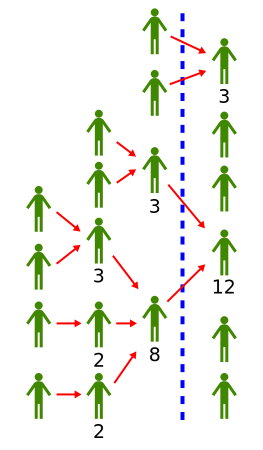

Liquid Democracy

Wir als Menschheit müssen effiziente Entscheidungsfindungsprozesse haben um unseren Planeten und uns Gegenseitig ein gutes Zusammenleben zu ermöglichen. Liquid Democracy bedeutet für mich dass jeder Mensch die Möglichkeit haben soll bei allen Entscheidungen die Ihn betreffen mitzureden. Und zwar je mehr, je direkter Ihn diese Entscheidungen betreffen. Damit das Skalieren kann, braucht es die Möglichkeit Entscheidungsfähigkeit zu delegieren. Aber im Gegensatz zu dem was wir unter Demokratie verstehen, gibt uns die Technik heute die Möglichkeit diese Entscheidungen zu Fällen wann es uns passt. Das bedeutet auch, dass man diese Entscheidung ändern und Zurückziehen (und selbst entscheiden) kann, wann immer man für richtig hält.
Ich glaube das dies eine Evolution der demokratischen Idee ist und ein wichtiges Werkzeug wenn wir als Menschheit irgendwann alle unsere Konflikte friedlich regeln wollen.
Eine Zeit lange dachte ich, dass innerhalb der Piratenpartei sowie in dem Liquid Democracy Verein die beste Möglichkeit ist um die Liquid Democracy Ideen zu entwicklen und zum Einsatz zu bringen. Ich glaube dass das leider gescheitert ist.
Traurigerweise bedeutet das auch, dass ich noch nicht weiß wie man diese Ideen Umsetzen muss, damit Sie funktionieren. Hier sammle ich meine Erfahrungen und Erkenntnisse darüber.